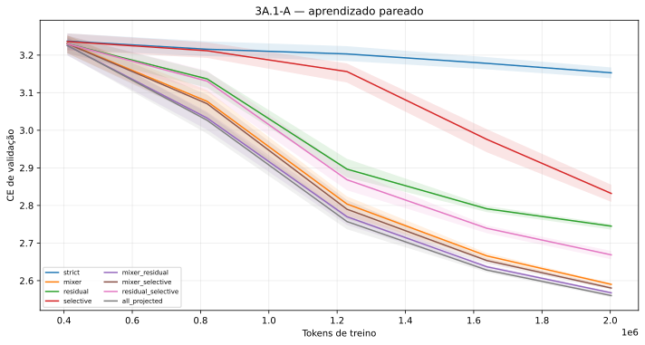
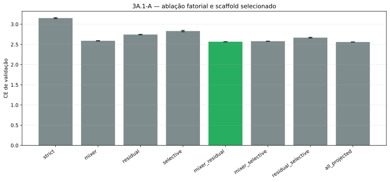
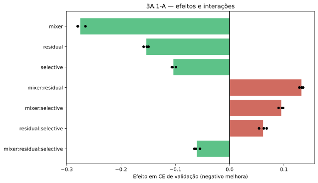
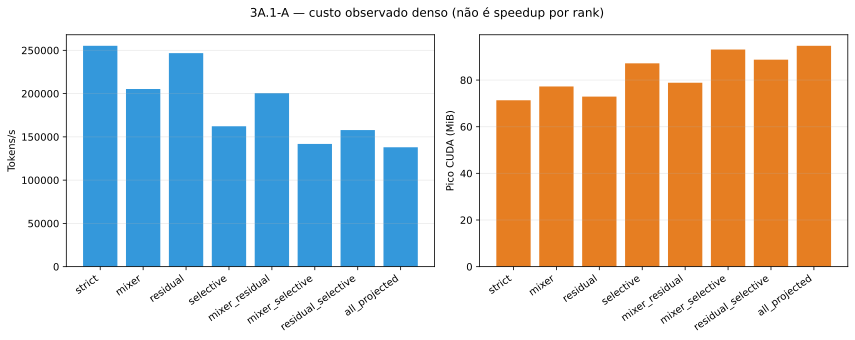

ASM-VR 3A.1-A
Custos observados em caminhos densos; não representam speedup causal por rank.
Gates
complete_matrix
: PASS
finite_runs
: PASS
streaming_parity
: PASS
quality_recovery
: PASS
validation ce by tokens

scaffold validation ce

factorial effects

observed dense cost
